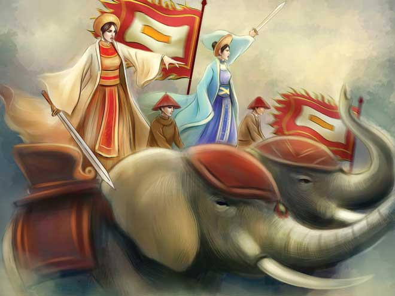
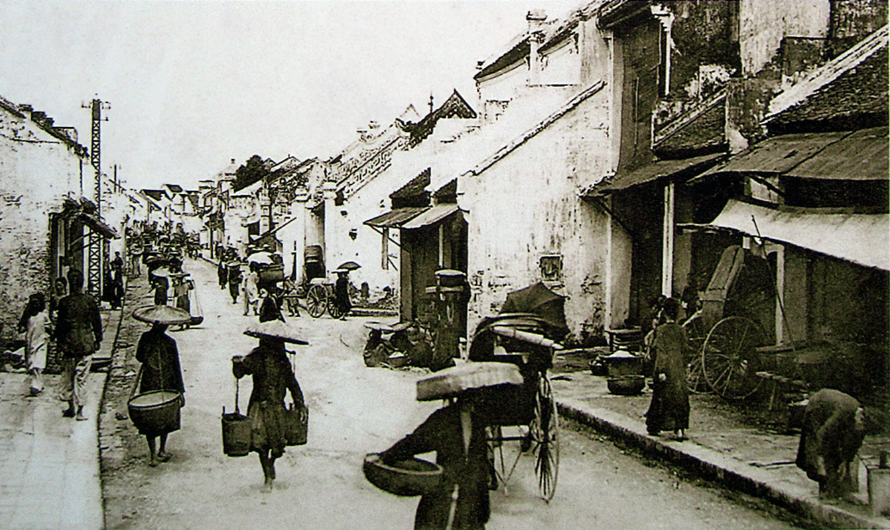
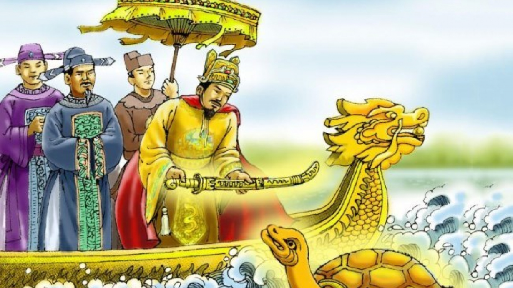
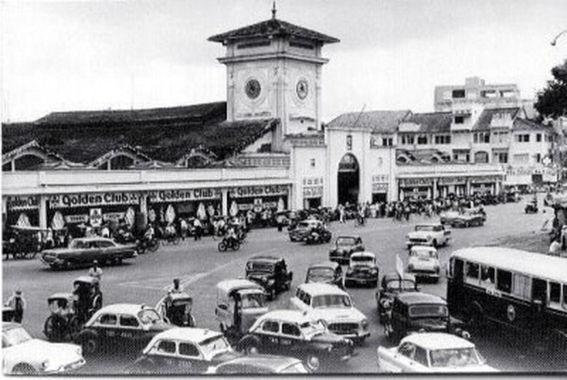

1. Hai Ba Trung who lead
the revolts against China domination,
but only stayed for 2 years
2. Ngo Quyen defeats Chinese forces
and ends the Chinese political domination.
1. Hai Ba Trung who lead
the revolts against China domination,
but only stayed for 2 years
2. Ngo Quyen defeats Chinese forces
and ends the Chinese political domination.

3.Tran Dynasty move
the capital from Hoa
Lu to Thang Long(Hanoi)
4.Le Loi and Nguyen
Trai led the revolts against the Ming
Dynasty


4.Hanoi became the
colonies of French
from 1862-1945
5. In 1954, the French defeated
at Dien Bien Phu and Ho Chi Minh
took the control of North Vietnam.

6.Vietnam was divided into 2 sides, North and South.
7. In 1965, the United States was involved
in South Vietnam and replace the French's control.
8. Vietnam unification in 1975
after Ho Chi Minh took over the south Vietnam.